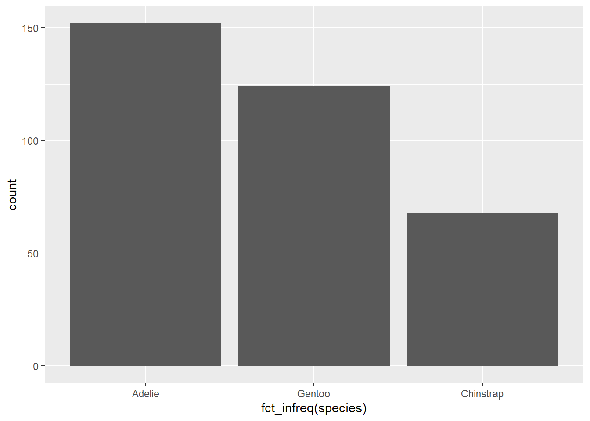
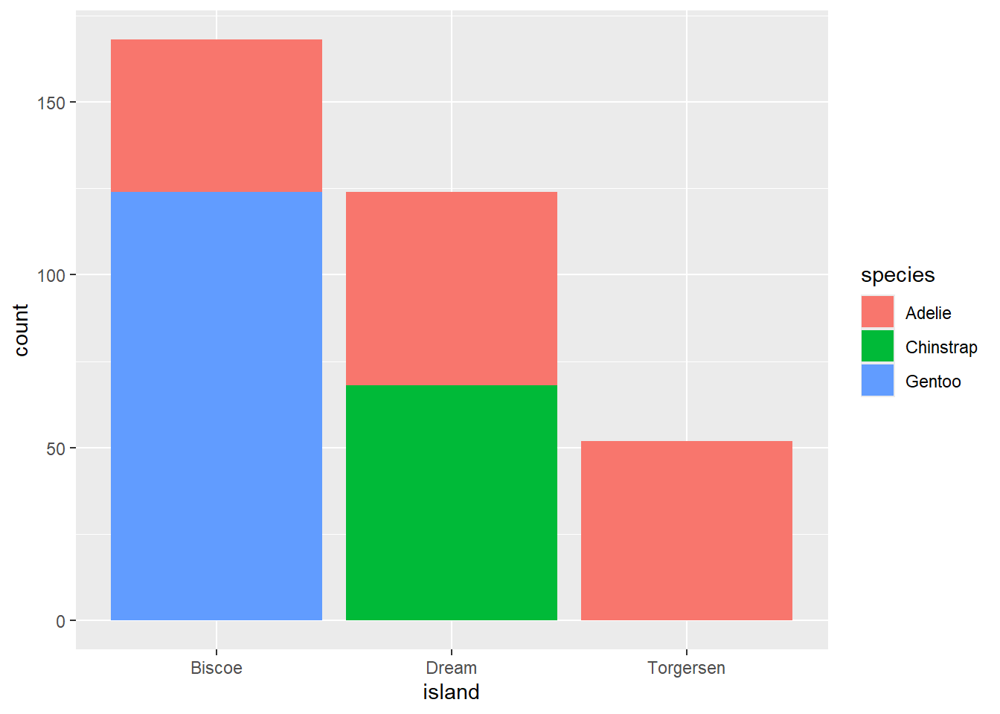
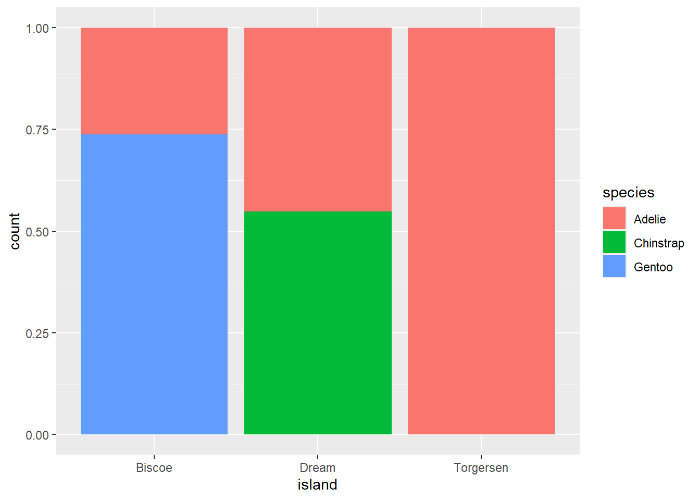
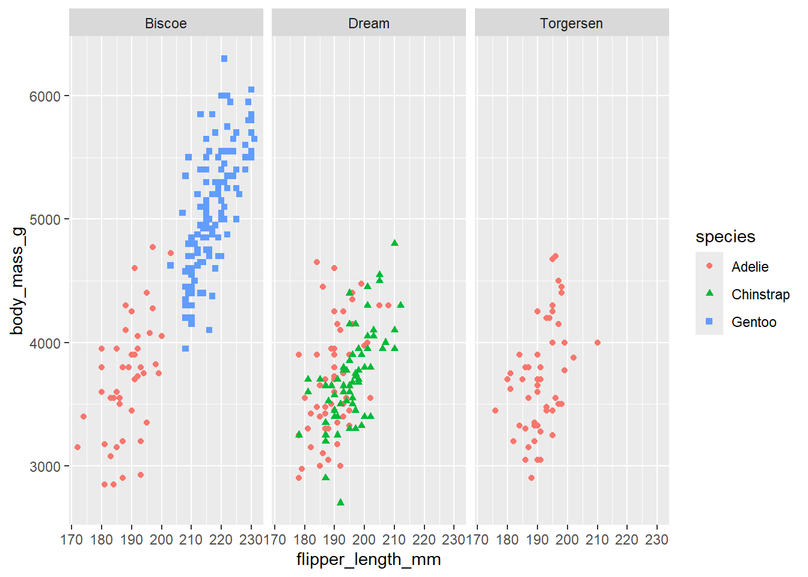

── Attaching core tidyverse packages ──────────────────────── tidyverse 2.0.0 ──
✔ dplyr 1.1.4 ✔ readr 2.1.5
✔ forcats 1.0.0 ✔ stringr 1.5.1
✔ ggplot2 3.5.1 ✔ tibble 3.2.1
✔ lubridate 1.9.3 ✔ tidyr 1.3.1
✔ purrr 1.0.2
── Conflicts ────────────────────────────────────────── tidyverse_conflicts() ──
✖ dplyr::filter() masks stats::filter()
✖ dplyr::lag() masks stats::lag()
ℹ Use the conflicted package (<http://conflicted.r-lib.org/>) to force all conflicts to become errors21 Types of Graphs
21.1 Visualizing Categorial Variables
A variable is categorical if it can only take one of a small set of values.
21.1.1 Bar Chart
To examine the distribution of a categorical variable, you can use a bar chart. The height of the bars displays how many observations occurred with each x value.
Example:
ggplot(penguins, aes(x = species)) +
geom_bar()
21.1.2 Bar Plots
In bar plots of categorical variables with non-ordered levels, like the penguin species above, it’s often preferable to reorder the bars based on their frequencies. Doing so requires transforming the variable to a factor (how R handles categorical data) and then reordering the levels of that factor.
Example:
ggplot(penguins, aes(x = fct_infreq(species))) +
geom_bar()
21.2 Visualizing Numerical Variables
A variable is numerical (or quantitative) if it can take on a wide range of numerical values, and it is sensible to add, subtract, or take averages with those values. Numerical variables can be continuous or discrete.
21.2.1 Histogram
One commonly used visualization for distributions of continuous variables is a histogram.
Example:
ggplot(penguins, aes(x = body_mass_g)) +
geom_histogram(binwidth = 200)Warning: Removed 2 rows containing non-finite outside the scale range
(`stat_bin()`).
A histogram divides the x-axis into equally spaced bins and then uses the height of a bar to display the number of observations that fall in each bin. In the graph above, the tallest bar shows that 39 observations have a body_mass_g value between 3,500 and 3,700 grams, which are the left and right edges of the bar.
You can set the width of the intervals in a histogram with the binwidth argument, which is measured in the units of the x variable.
Example:
ggplot(penguins, aes(x = body_mass_g)) +
geom_histogram(binwidth = 20)Warning: Removed 2 rows containing non-finite outside the scale range
(`stat_bin()`).
ggplot(penguins, aes(x = body_mass_g)) +
geom_histogram(binwidth = 2000)Warning: Removed 2 rows containing non-finite outside the scale range
(`stat_bin()`).
An alternative visualization for distributions of numerical variables is a density plot. A density plot is a smoothed-out version of a histogram and a practical alternative, particularly for continuous data that comes from an underlying smooth distribution.
Example:
ggplot(penguins, aes(x = body_mass_g)) +
geom_density()Warning: Removed 2 rows containing non-finite outside the scale range
(`stat_density()`).
21.3 Visualizing Relationships
To visualize a relationship we need to have at least two variables mapped to aesthetics of a plot.
21.3.1 Numerical and Categorical Variable
You can use side-by-side box plots. A boxplot is a type of visual shorthand for measures of position (percentiles) that describe a distribution. It is also useful for identifying potential outliers.
Example:
ggplot(penguins, aes(x = species, y = body_mass_g)) +
geom_boxplot()Warning: Removed 2 rows containing non-finite outside the scale range
(`stat_boxplot()`).
Alternatively, we can make density plots with geom_density().
Example:
ggplot(penguins, aes(x = body_mass_g, color = species)) +
geom_density(linewidth = 0.75)Warning: Removed 2 rows containing non-finite outside the scale range
(`stat_density()`).
Additionally, we can map species to both color and fill aesthetics and use the alpha aesthetic to add transparency to the filled density curves. This aesthetic takes values between 0 (completely transparent) and 1 (completely opaque). In the following plot it’s set to 0.5.
ggplot(penguins, aes(x = body_mass_g, color = species, fill = species)) +
geom_density(alpha = 0.5)Warning: Removed 2 rows containing non-finite outside the scale range
(`stat_density()`).
21.3.2 Two Categorical Variables
We can use stacked bar plots to visualize the relationship between two categorical variables. For example, the following two stacked bar plots both display the relationship between island and species, or specifically, visualizing the distribution of species within each island.
Example:
ggplot(penguins, aes(x = island, fill = species)) +
geom_bar()
The following plot, a relative frequency plot created by setting position = "fill" in the geom, is more useful for comparing species distributions across islands since it’s not affected by the unequal numbers of penguins across the islands.
ggplot(penguins, aes(x = island, fill = species)) +
geom_bar(position = "fill")
In creating these bar charts, we map the variable that will be separated into bars to the x aesthetic, and the variable that will change the colors inside the bars to the fill aesthetic.
21.3.3 Two Numerical Variables
A scatterplot is probably the most commonly used plot for visualizing the relationship between two numerical variables.
ggplot(penguins, aes(x = flipper_length_mm, y = body_mass_g)) +
geom_point()Warning: Removed 2 rows containing missing values or values outside the scale range
(`geom_point()`).
21.3.4 Three or More Variables
We can incorporate more variables into a plot by mapping them to additional aesthetics. For example, in the following scatterplot the colors of points represent species and the shapes of points represent islands.
ggplot(penguins, aes(x = flipper_length_mm, y = body_mass_g)) +
geom_point(aes(color = species, shape = island))Warning: Removed 2 rows containing missing values or values outside the scale range
(`geom_point()`).
21.3.5 Facets
Adding too many aesthetic mappings to a plot makes it cluttered and difficult to make sense of. Another way, which is particularly useful for categorical variables, is to split your plot into facets, subplots that each display one subset of the data.
To facet your plot by a single variable, use facet_wrap(). The first argument of facet_wrap() is a formula3, which you create with ~ followed by a variable name. The variable that you pass to facet_wrap() should be categorical.
ggplot(penguins, aes(x = flipper_length_mm, y = body_mass_g)) +
geom_point(aes(color = species, shape = species)) +
facet_wrap(~island)Warning: Removed 2 rows containing missing values or values outside the scale range
(`geom_point()`).
If you don’t specify the width and height they will be taken from the dimensions of the current plotting device. For reproducible code, you’ll want to specify them.